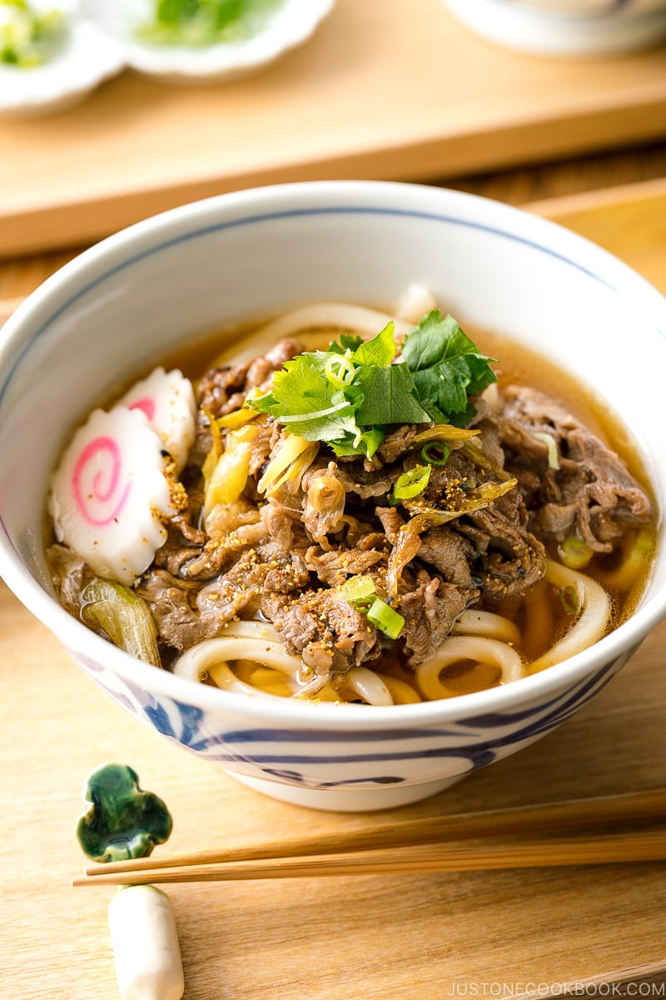

Beef Udon Soup

Description
This is another easy recipe that you can make at home
that is super fast and tastes delicious! Most of the
ingredients you can find at your local asian super
market. We are going to be making one of my go-to
quick eat at home: Beef Udon Soup.
Ingredients
Broth:
- 625 ml dashi stock
- 1.5 tbsp soy sauce
- 1 tbsp mirin
- 1 tsp sugar
- a pinch of kosher salt
For udon soup
- 1 tbsp neutral oil
- 1 chopped scallion
- 200g thinly sliced beef
- 1 tbsp soy sauce
- 2 tsp sugar
- 2 servings udon noodles
Toppings
- 4 stems mitsuba (japanese parsley)
- 1 chopped scallion
- 4 slices of narutomaki
- pinch of shichimi togarashi
Instructions
Udon Broth:
- in a medium sauce pan, add measured water
and add in dashi stock packet.
- simmer the brother for 2-3 minutes.
- add in the ingredients for broth and
mix it together. cover with lid and remove from heat.
Beef
- heat a frying pan on medium heat. When
hot, add in the oil and scallions.
- when scallions are nicely browned, add in the
beef and cook until no longer pink.
- add in the sugar and soy sauce.
- stir fry the meat until it is coated with seasoning.
Udon Noodle Soup
- for frozen:put in boiling water
and let it boil for 2-3 minutes and stir occasionally.
strain into bowl
- for packets:put in boiling water and
boil for 1 minute. stir ocassionally and strain into bowl.
- place your stir fried beef, scallions, mitsuba, narutomaki
on top and sprinkle with some shichimi togarashi on top.
Ladle some broth over and enjoy!